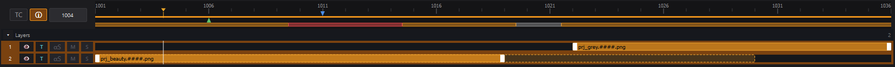
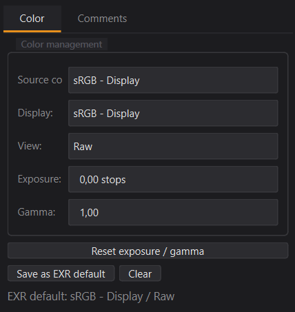

A VFX-grade image sequence & video viewer. Drop EXR / DPX / TIFF / PNG
dailies or mp4 / mov / ProRes / DNxHR clips with synced audio,
stack multiple layers, trim them on the master timeline, review in real
OCIO color, compare two takes with a wipe / opacity overlay, annotate with
the pen, comment per frame — ship the result as video or a baked sequence.
A persistent disk cache means yesterday's shots open warm today;
background channel pre-cache means switching AOVs is instant.
Flick Player reads what your pipeline produces — multichannel EXRs, OCIO-aware
floats, sparse sequences with holes, mp4 / mov / ProRes clips with audio,
multiple takes side by side — and gives you the tools you need to actually
review them. Stack, trim, annotate, comment, export, share.
Real-time playback
Async RAM cache + OpenGL viewport. Smooth scrubbing on 4K EXRs at 24 fps. Worker pool auto-tunes to your CPU + GPU.
Drop mp4 / mov / mkv / ProRes / DNxHR clips alongside your EXR layers — PyAV-decoded video with synced audio output. Per-layer mute / solo and wall-clock-driven playback so A/V never drifts.
Save the full layer stack — sources, offsets, trims, channels, alpha modes, audio gain — to a single .session JSON. Drop the file back on the viewer to restore everything.
Hardware-adaptive RAM
Auto-tunes cache budget + worker count from your GPU / total RAM. Status bar shows live cache used / budget · system free so you can spot pressure without opening Task Manager. Re-tunes on every project open.
Studio deployment
Drop a flick.toml next to FlickPlayer.exe to set studio-wide defaults — pinned OCIO config, custom disk-cache path, budget. Per-user overrides live in their own flick.toml in %APPDATA%, never trample the deploy. Plain TOML, hand-editable, versionable.
Two takes, one wipe.
Pick layer A, pick layer B, drop the seam where you want it. The compare
overlay lives entirely in the GPU shader — dragging the seam is a uniform
update, not a re-decode. Four modes cover every comparison gesture you'd
otherwise hop between two viewers for.
Vertical wipe — left half from A, right half from B. The classic plate-vs-comp gesture.
Horizontal wipe — top from A, bottom from B. Useful when the difference is along a horizon.
Opacity blend — linear mix at the seam value. 0 = pure A, 1 = pure B.
Solo B (A↔B button) — temporary "show full B" override without leaving the chosen blend.
On-image A/B markers — orange letters anchored to image-space corners (mode-aware: top corners for vertical wipe, right edge for horizontal, top corners for opacity), follow pan + zoom. In opacity mode each letter fades with the seam — the marker mirrors the blend rather than competing with it.
Numbered dropdowns + A/B seam bar — A/B layer pickers prefix layer names with their row number ("1. shot.exr") so they map directly to the layer panel. The seam bar in the menu row gets orange A/B end-labels too.
Right-click drag in the viewport moves the seam live; W toggles compare on/off; Ctrl+W swaps A and B. Compare auto-exits when the stack drops below 2 layers.
Bake into your export — tick "Bake A/B compare overlay" in the export dialog and the live wipe is reproduced for every frame written to disk.
compare/state.py · GPU shader
contact_sheet/compose.py · grid composite
Every layer, side by side.
Drop your three takes, your six AOVs, your render-version comparison
stack — flip into contact sheet mode and Flick tiles them in a
grid, each layer re-aligned to "frame 0" so you read across instead of
around. Ctrl+G toggles it; the master timeline keeps driving playback
for all tiles at once, or you drag per tile to scrub one layer
independently of the rest.
Smart grid by default — Flick picks the cols × rows that
maximise per-tile area inside the current viewport aspect. No
empty rails, no wasted real estate.
Axis presets — "1 row / 2 rows / 3 rows / 4 rows" pin the
row count and auto-fit the columns to the layer count (5 layers +
"2 rows" = 3×2 grid with one empty cell). Same shape on the
column axis. No more dropping layers off the edge of a fixed 2×2
preset.
Custom grid — pick exact cols × rows when you want a
specific review layout.
Output divisor — full / 1/2 / 1/4 / 1/8 the source
resolution per tile. Trades GPU upload bandwidth for review-grade
detail.
Layer panel auto-collapses on entry so the grid gets the
screen real estate. The master timeline dims + locks during CS
mode (per-tile scrub is the active gesture).
Per-tile interactions.
The grid isn't just a viewer — every tile is its own scrub surface,
its own annotation surface, and its own export-ready buffer. Per-layer
state stays attached to each tile through the swap-source workflow
too.
Per-tile drag-to-scrub — horizontal drag on a tile shifts
that layer's frame offset, anchored to the press position.
Letterbox-aware mapping so the gesture lands on the right tile in
any grid.
Per-tile annotation bake — strokes attached to each layer
(by layer.id) are composited into the right tile at
the right frame. Existing notes show up across the whole grid at
a glance.
Per-tile labels with #### placeholder
substitution — render.1042.exr rather than the raw
render.####.exr + a "Frame 1042" sidecar.
Save Frame As… picks up a "Contact sheet (W×H)" preset
automatically so you can ship the grid as a single PNG / TIFF in
one click.
Scrub-offset clamp — dragging past a layer's end stops at
the boundary instead of accumulating an out-of-range offset.
Reverse drags respond immediately.
ui/timeline.py

A timeline that tells you what's going on.
One bar carries every dimension of the sequence's state — at a glance, you
know which frames are cached, which failed to decode, which fall in a
multi-layer gap, where you've left a note, what's in/out range, and where
the playhead is.
Translucent orange runs = frames in RAM. The bar shows your prefetch high-water mark.
Red runs = source file missing or unreadable. They override the cache run on the same slot so a hole is impossible to miss.
Mid-grey runs = no layer covers — Flick plays through and the viewport paints a checkerboard with the missing filename baked in.
Green triangles = annotated frames. Blue dots = frames with comments.
Ctrl + click sets and drags the in / out points — like Nuke.
The cursor scrubs outside the in/out range; playback snaps back inside on press.
Frame ↔ timecode labels swap with Ctrl+T — same bar, both reading conventions.
Minimal mode in fullscreen strips everything but the rail and the playhead, so playback stays the only thing on screen.
Layers, trim and offset.
Drop image sequences, video files (mp4 / mov / mkv / m4v / avi) or single
stills and Flick Player stacks them. Each layer carries its own offset on
the master timeline, its own IN / OUT trim, its own channel selection, its
own alpha-composite mode and its own audio state. Drag the body to slide,
drag a handle to trim — the right edge stays put on IN-trims, just like a
real NLE.
Drop on the viewer = replace the focused sequence. Drop on the panel = add as a new layer above.
Drag the row vertically to reorder. A drop indicator shows where it'll land.
Trim handles snap to the playhead, master IN/OUT and other layers' edges.
Ghost overlay (dashed orange) shows source frames hidden by the trim — drag the handle back outwards to reveal them.
Per-layer T / αS toggles control alpha-over compositing and straight-vs-premultiplied alpha handling.
M / S audio buttons on each video layer — mute or solo, like a mixer. PlayerController stays in wall-clock mode so A/V never drifts.
Still layers get an adjustable hold duration so a single PNG / JPG can stretch over as many master frames as the review needs.
👁 visibility per layer — temporarily hide a pass without losing its slot; the cache keeps its frames around for when you toggle it back on.
Right-click → Replace source… swaps the underlying sequence
while preserving the layer's id — annotations, comments, the trim,
the offset, the alpha mode all stay attached. Review v1, get v2,
repoint the layer in one click. Cache + path-index flush is
detected automatically (forward + Ctrl+Z undo paths both
covered).
The cache that remembers your channels.
Three tiers: RAM for the active scrub, a persistent disk cache
for shots you've already reviewed, source decode as a last resort. Yesterday's
dailies open warm today. Switch RGB → albedo → RGB and the second RGB is an
instant cache hit, not a 1000-frame re-decode — Flick keys on
(master_frame × signature) at every tier, so channel toggles never
invalidate.
Disk tier
Persistent across sessions — decoded frames evicted from RAM are saved as lz4-compressed half-float blobs (≈ 25 MB per 4K frame, ~5 ms decode). Close Flick, reopen tomorrow, scrub: cache hit.
Per-contributor caching — each layer's contribution is cached separately, so reordering or hiding a layer leaves the others hot on disk.
Pre-paint timeline — a dim-orange wash on the cache bar shows which frames are available on disk before you even scrub to them.
Auto-reload on disk changes — a debounced QFileSystemWatcher picks up re-renders within ~200 ms. No need to press Ctrl+R when comp re-publishes.
Multi-process safe — opening Flick twice falls back to read-only mode on the second instance; no corrupt index.
Configurable — Preferences > Disk cache lets you change the location (NVMe scratch), set a budget (default 50 GB, soft cap), or turn lz4 off for ~5× faster reads on fast NVMe.
RAM tier
Background channel pre-cache — once the active channel is fully cached, idle workers quietly pre-decode the focused layer's other groups (RGB beauty, AOVs, normals, Z…) into their own cache slots. Switching becomes free.
Per-row progress bars in the channel menu show each group's fill in real time. Same translucent-orange idiom as the timeline cache bar — visible right on the dropdown button while it's closed.
Keyboard navigation in the channel menu — ↑ / ↓ walk through groups without leaving the keyboard. Pairs naturally with the cached-snapshot model: every step is instant.
In/out range first — alt prefetch front-loads frames inside your playback range, then fills the rest of the nav range.
Suspended during playback so the GIL stays clean — workers can't be preempted mid-decode, so we hold off until you pause. No more 1-2 frame stalls when an alt steals time during a scrub.
Smart eviction — when RAM gets tight, stale-signature snapshots and hidden-layer contributions go first, then live frames by distance from the playhead. The view you're looking at is always the last to leave.
Smart reload (Ctrl+R) re-decodes only files whose mtime changed. Force reload (Ctrl+Shift+R) drops everything for the rare case where files were overwritten without an mtime bump.
ui/channel_menu.py · per-group cache bar
Two ways to annotate.
Persistent = strokes saved to a sidecar JSON, frame-keyed, ready to share.
Ghost mode (👻) = strokes fade out on their own, perfect for live
screen-share commentary in Meet / Discord. The toolbar's outer border turns
cyan when ephemeral mode is active so the state is unmistakable.
7-color review palette tuned for VFX (red / yellow / green / blue / orange / b&w).
Per-frame undo — Ctrl+Z only undoes the current frame's edits, no surprise jumps.
Eraser deletes whole strokes by hit-testing the polyline, not pixel-level.
Three fade presets in ghost mode: court ~2 s, moyen ~5 s (default), long ~10 s.
👁 Show during playback — toggle visibility in real time without losing your work.
Bake into export if you want a self-contained MP4 to send a colleague.
Per-layer storage — strokes (and comments) are partitioned by
layer.id in memory and on disk. Each layer carries
its own annotation set, surfaced automatically when the layer is
focused. Multi-layer sessions keep every layer's notes isolated.
Survives source swaps — right-click a layer →
Replace source…, point at v2 of the render: the
layer.id stays, the sidecar's
layers[] entry stays, your annotations come
back on the same frames over the new pixels. Perfect for "did the
artist address my notes?" passes.
Contact-sheet aware — in CS mode each tile bakes its
layer's strokes at its source frame, so the whole review at
a glance shows every layer's existing notes.
Sidecar v2 (.img_player_annotations.json) keyed
on layer.id with name_hint +
source_path_hint for portability. Legacy v1 files
(keyed on basename) still load — auto-migrated on first save.
📌
👻
✏️
🧽
Size
5px
↶
↷
Clear
Real OCIO color, on the GPU.
Flick ships with 8 ACES configs (1.3 + 2.0 in both CG and
Studio flavours), picked from a dropdown in Preferences >
Color Management. Default is ACES 1.3 CG — matches Nuke / Maya /
OpenRV out of the box, so your image looks identical to the rest of
the pipeline without any setup. Point it at your studio's custom
config.ocio when you need to. The display transform runs
on the fragment shader, so toggling source / display / view is free —
no cache invalidation, no re-decode.
8 built-in OCIO configs — ACES 1.3 + 2.0, CG + Studio. Switch
from ACES 1.3 (industry default) to ACES 2.0 (new tone mapper) or
the broader Studio variants in one click. Hot-reload — no restart.
Auto-detect input colorspace from EXR header attributes — the
loader sweeps for colorspace / color_space
keys written by Nuke, Arnold, V-Ray, Houdini, and matches them
against the active config's role and alias table.
Unmarked-EXR override: when no metadata is found, the Color
panel lets you pick the default colorspace per pipeline (ACEScg,
scene_linear, Linear Rec.709…) and remembers it across sessions —
no more tagging every shot by hand.
Per-image exposure nudge with + / -
(±0.25 stops), plus gamma trim — both live in the shader.
Per-layer channel selection — pick a single AOV / depth /
normals layer and view it as RGB; pre-cached in the background per
layer with its own master-frame entry.
RGBA mute: toggle channels off in the shader without
invalidating the cache. Solo-alpha shows the alpha channel as
grayscale (white = opaque, black = transparent), Nuke / RV
convention.
Transparency BG picker next to the RGBA buttons —
checker / black / mid grey / white. The fragment shader
branches on a uniform; switching is free and the choice
persists across sessions.
color panel

Per-frame comments for the team.
Annotations are visual; comments are textual. A side panel beside
the viewer holds a thread of notes attached to whatever frame the playhead
is on — perfect for "the lighting is too cool" feedback that doesn't need a
stroke.
Author auto-filled from the OS username — no login flow.
Created / edited timestamps tracked per comment.
Blue dots on the timeline mark every commented frame for one-click jumps.
Same JSON sidecar as annotations — one file travels with the sequence.
The Comments tab shares the side dock with Color; flip with one click.
annotate/comment_panel.py
Color
Comments
Frame 10423 comments
lam2 min ago
Lighting on the bear is too cool — push warm a notch to match the lanterns?
marie15 min ago · edited
Logo entrance feels late. Can we trigger it 4-5 frames earlier?
julien1 h ago
Approved on the comp side — pending color review.
Export to anything.
Send your sequence as an image-per-frame run for the next tool in the pipe,
or bake it into one of eight video codecs to ship a review reel. The live
A/B compare wipe bakes through too. Every option persists between sessions.
Custom filename: empty falls back to the source basename, otherwise drives the output (image seq → {stem}.NNNN.ext, video → {stem}.ext). Versioned bundle dirs by default.
Range: full sequence, in/out, or custom from / to. Resolution: source / 720p / 1080p / 4K UHD / custom (with aspect lock). Frame rate: source / 23.976 / 24 / 25 / 29.97 / 30 / 60 / custom.
Color: bake the OCIO display transform, or keep the linear buffer untouched (EXR / TIFF passthrough).
Annotations: bake into pixels + optional sidecar JSON copy alongside the export.
Bake compare overlay: when the live wipe is on, the export reproduces it for every frame. Untick to ship the active sequence's clean composite instead.
Missing-frame policy (see below): never let a hole abort an overnight render again.
export/dialog.py · sequence export
Save Frame As… for one-shot stills.
Need a single image to drop in a review email or a Slack thread? File →
Save Frame As… renders the current frame at full source
resolution (not a zoom-cropped viewport grab), with the same compare
and annotation toggles as the full export — no need to spin up a 1-frame
range. The active OCIO display transform bakes through too, so what you
see is what gets written.
Formats: PNG / JPG / TIFF / BMP / WebP. Defaults to PNG with the source basename + master frame number.
Resolution picker — Source / 4K UHD / 1080p / 720p / Custom
with Lock-aspect, same UX as the full export dialog. Custom dims
persist across sessions per user.
Contact-sheet preset — when CS mode is active the dialog
injects a Contact sheet (W×H) entry at the top of the
list and selects it by default, so you ship the grid in one click.
Same toggles as full export: bake annotations, bake the A/B compare wipe, bake OCIO display.
Persistent path — the dialog remembers the last folder you wrote to, per session.
File → Save Frame As…
Three policies for missing frames.
Found a hole in the sequence at 03:12 AM during the overnight render? Pick
the policy on the way out so the export decides what to do without you.
Abort — fail loud at the first missing frame. Default; safest for finals.
Black — substitute a black frame. Quick when the gap is near a cut and you're shipping a draft.
Placeholder — write the rich "MISSING FRAME" graphic. Best for a dailies pass — reviewers can't miss the issue.
export/dialog.py · missing frames
Abort on missing frame
Stop rendering and surface the first missing master frame number.
Substitute with black frame
Write a fully-black frame at the right resolution; render continues.
Substitute with the missing-frame placeholder
Bake the rich "MISSING FRAME · SEQUENCE ERROR" graphic — same one shown live.
Custom resolution
1920×1080
Lock aspect ratio (16:9)
What's new.
Latest release: v1.6.0 — the "Studio Dark v2"
interface redesign. A rebuilt design system (surfaces, accent
tints, a proper button system), a 56-icon inline-SVG library replacing the
old emoji glyphs, a slim header info strip floating over
the viewer with sequence name / resolution / fps / live Layer & Frame
position, and a redesigned three-zone status bar. The
transport bar, timeline, compare band, contact-sheet band and top-right
toolbar were all restyled to the new charter. The full history — every
public release, what changed, why it changed — lives on its own page.


Lighting on the bear is too cool — push warm a notch to match the lanterns?
Logo entrance feels late. Can we trigger it 4-5 frames earlier?
Approved on the comp side — pending color review.